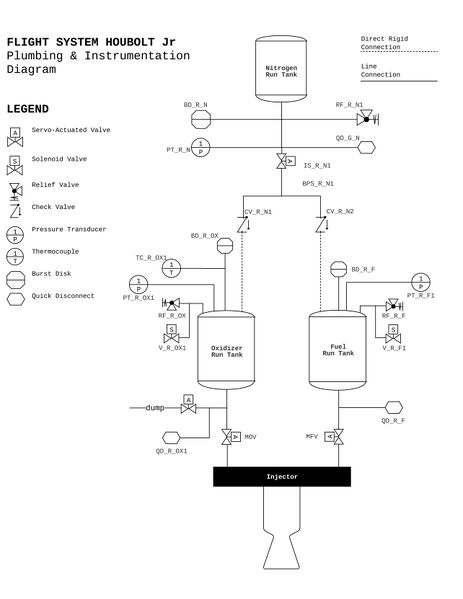
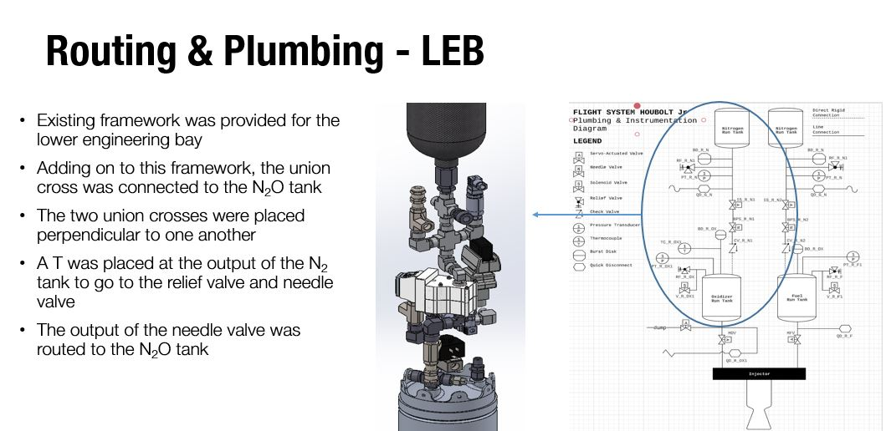
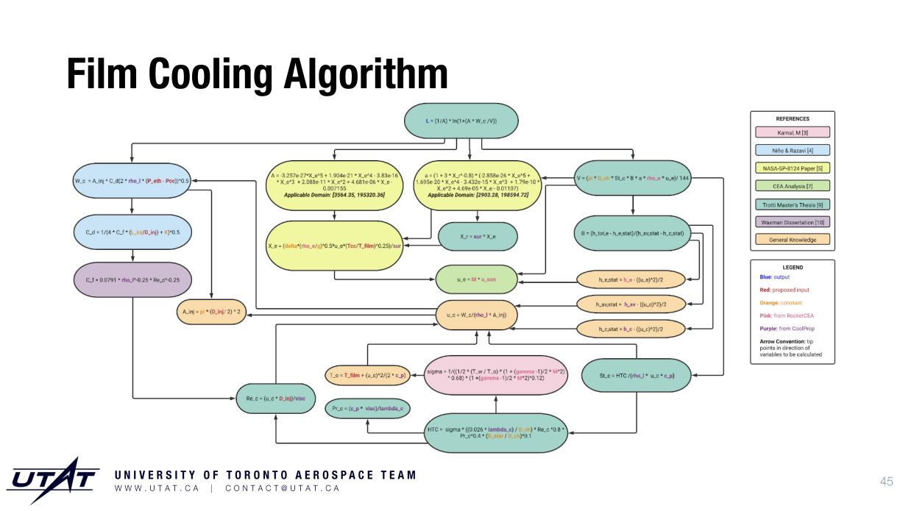
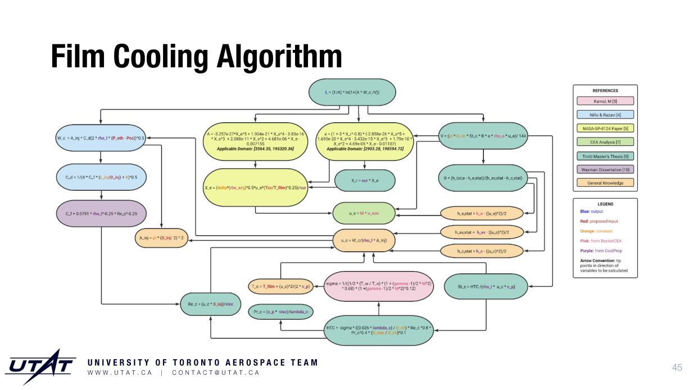

What is this project?
The Houbolt Jr. rocket is the first attempt by UTAT (UofT Aerospace Design Team) to make a liquid rocket. Conceptual design is still ongoing, with large scale physical engine tests in the works for 2023 any beyond. Some specifications based on the final design driving requirements (taken from the UTAT rocketry wiki) are shown below:
| Spec | Quantity |
|---|---|
| Thrust | ___2120 N |
| ISP | ___245s |
| Effective Exhaust Velocity | ___2403 m/s |
| Characteristic Velocity | ___1511 m/s |
| Engine Pressure | ___350 PSI |
| Chamber Temperature | ___2749-2778 K |
| Target Altitude | ___10,000 ft |
| Ox/Fuel + Ratio | ___N2O/Ethanol 3:1 |
| OX Mass Flow Rate | ___0.8 kg/s |
| Fuel Mass Flow Rate | ___0.267 kg/s |
| Burn time | ___8.4s |
| Burnout Altitude | ___1068m |
| Exit Mach Number | ___2.7 |
| Expansion Ratio | ___3.9 |
| Chamber Length | ___7 inch |
Fuel System Routing and Plumbing (Fall 2020)
My first major project (fall of my first year) at UTAT rocketry was to convert PID drawings of the fuel routing and plumbing system into candidate 3D designs in SolidWorks. This was actually my first-ever experiance with SolidWorks and GrabCAD, which while had a very steep learning curve, helped me greatly in future mechanical engineering classes / other projects that required SolidWorks. This was done alongside Andrew Castro. 
Film Cooling Investigation (Spring 2021)
Early on in the conceptual design of the propulsion system, it was proposed to supplement the primary interior cooling mechanism (ablative liner) with film cooling, to combat the potential for local hotspots in the nozzle and combustion chamber. Using analytical models NASA A and NASA B, the full implicit algorithm for evaluating the length of the liquid phase region of the ethanol film cooling down the combustion chamber as a function of coolant jet hole and other engine/rocket parameters was researched and implemented by myself and Natacha Hughes. In the end, the focus shifted to developing a robust ablative system because of the engineering/machining challanges associated with creating the film coolant injection system in the pintle.
 

Thermal Resistance Network for Ablative Cooling (Spring - Summer 2021)
In order to model what ablative materials are required for use in the combustion chamber to survive the expected temperature conditions over the burn time, with a large margin of saftey, analytical modeling was preformed, in anticipation for future hot-fire engine tests. The first proposal, prepared by myself and Natacha Hughes, involves using MATLABs PDEToolbox to solve a non-steady heat conduction equation for a cylindrical ring developed by Schoyer. Later on, our task was changed to implement a simpler solution based on the NASA Q-star method, where code parameters would be obtained by measuring the ablation rate experimentally, under some future hot-fire test because "trying to solve this with a time-varying PDE is like trying to kill a fly with a tank". The documentation for that is shown here, written my myself and Kelvin Leong. The code for both of these cannot be shared under UTAT IP regulations.TOP Nozzle Contour Generation (Spring 2022)
In our stress analysis of different nozzle segments in ANSYS, we need to import nozzle contour CSV files. In order to generate these in the first place, I wrote a Python script that produced a CSV file of a nozzle contour based on the Rao- Shmyglevsky TOP (thrust-optimised parabola) bell nozzle formulation (a good summary of this can be found here). This script takes in a desired throat radius, inlet radius and inlet angle, and outputs a CSV of the nozzle curve. In addition, if the combustion chamber temperature and pressure is specified, it will also return pressure, chamber temperautre and mach number distributions over the length of the combustion chamber. Image shown is from the source above linked.